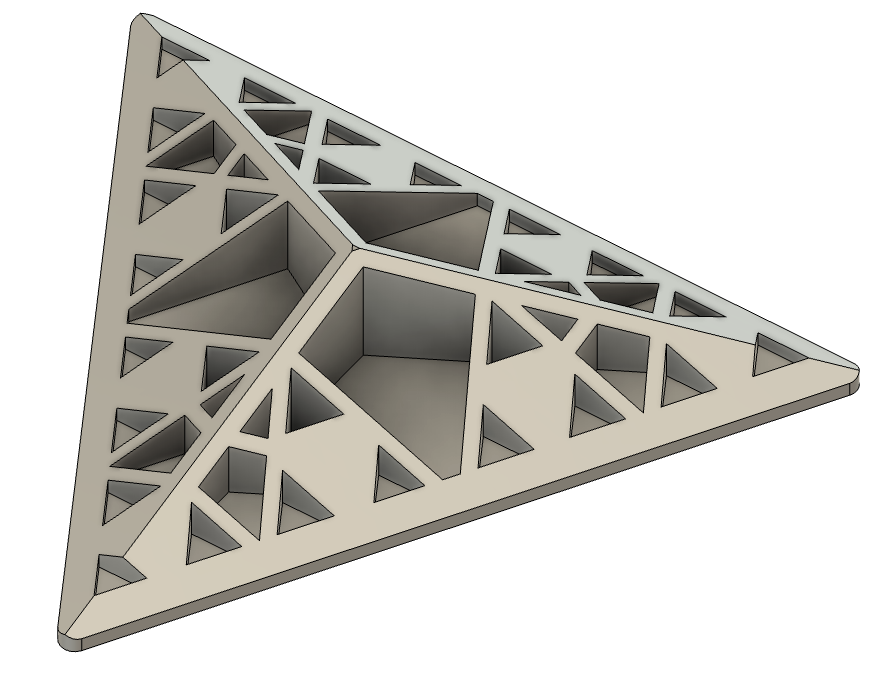
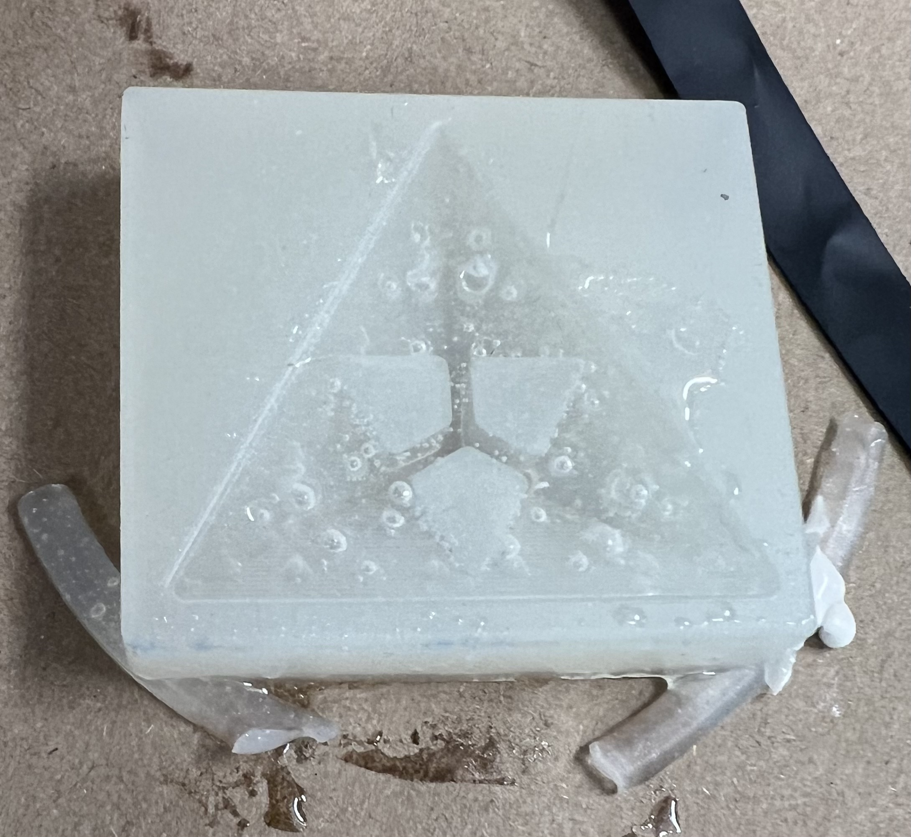

<div class="textcontainer">
<p class="margin"> </p>
<h3>Day 8: CNC Milling</h3>
<h4>Assignment: Make Something With CNC</h4>
Since my final project's case could just be laser cut, I decided to just mold & cast an interesting
fractal-like object.<br>
<p></p><br>
And after molding and starting to cast left me with:<br>
<p></p><br>
I did consider the possibility that some of the holes might be a bit small to machine but think much of it so many barely
showed up in the mold. It certainly didn't help that there were many bubbles.
[final product TBD]
</div>